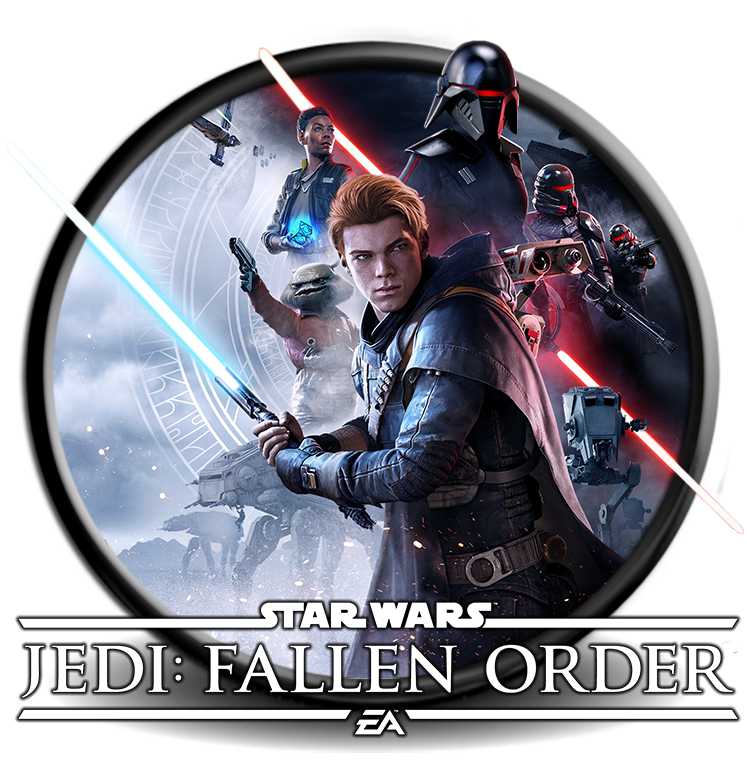
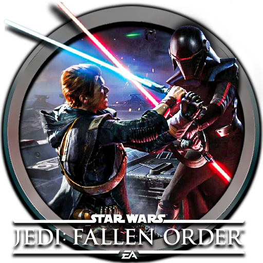
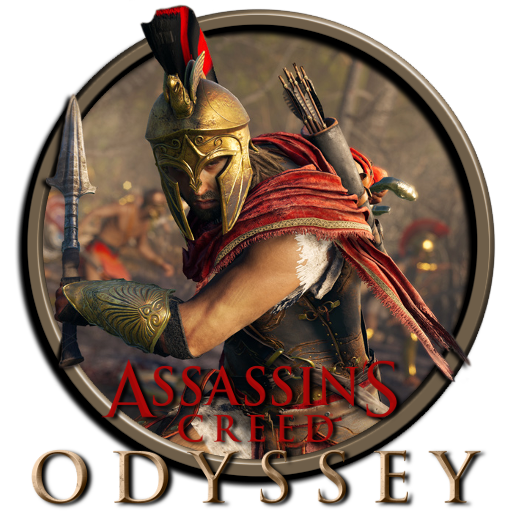
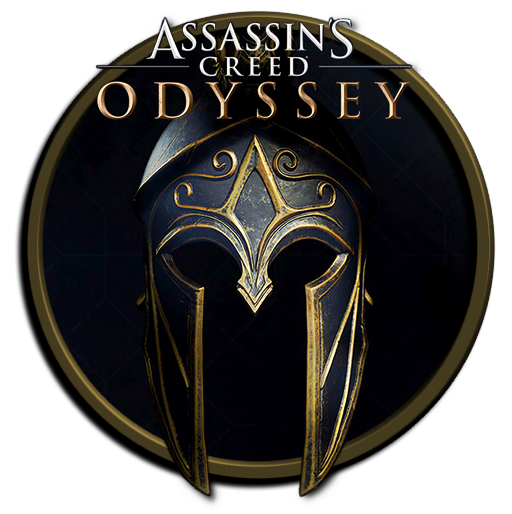
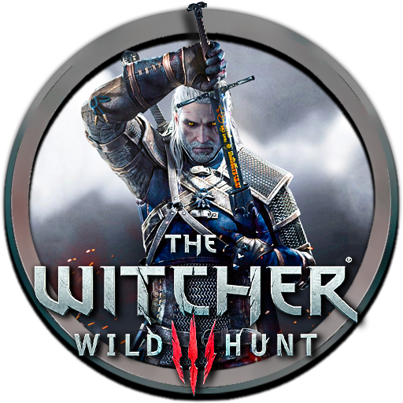
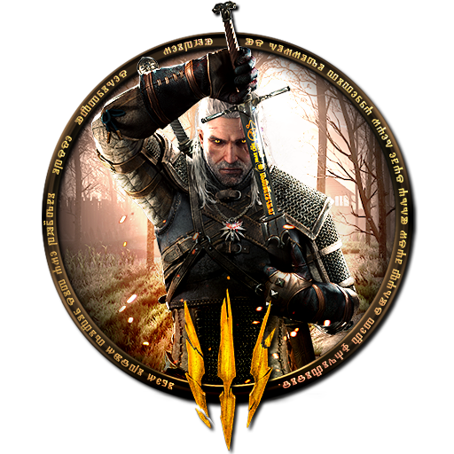

A kalandjáték egy videójáték-műfaj. Elsősorban a játékos kreativitását és logikáját veszi igénybe. Egy történetet mesél el, amelynek főszereplőjét a játékos irányítja, emiatt szokás interaktív rajzfilmnek/filmnek is nevezni. A feladat általában egy rejtély megoldása, illetve szervezkedő gonosz erők legyőzése. Jellegzetes eleme tárgyak összegyűjtése és megfelelő célra való felhasználása.
Játékbemutatás
A Star Wars Jedi: Fallen Order egy 2019-es lenyűgöző akció-kalandjáték, melyet a Respawn Entertainment fejlesztett ki és az Electronic Arts adott ki. A játék izgalmasan elhelyezi a játékosokat a Csillagok háborúja univerzumában, pontosan öt évvel az eseményeket követően, melyek a Sith-ek bosszúja című részben zajlottak le. Ebben a lenyűgöző környezetben a játékosoknak lehetőségük van felfedezni a galaxis izgalmas részeit, miközben mélyen belemerülnek egy olyan történetbe, mely tele van kalandokkal, akcióval és a Jedi-rend legendájával.
 Assassin’s Creed Odyssey egy lenyűgöző akció-szerepjáték, melyet a Ubisoft Quebec készített, és a Ubisoft adott ki. Ez a sorozat tizenegyedik jelentős folytatása és az összesítésben huszonegyedik része, folytatva az Assassin’s Creed Origins által elindított történetet, mely 2017-ben látta meg a napvilágot. Az Odyssey a játékosokat egy elképesztő utazásra invitálja az ókori Görögországba, tele izgalmas kalandokkal és epikus küzdelmekkel, melyek során a múlt és a jelen összefonódik a karakterek sorsában.
 Witcher 3: Wild Hunt egy lenyűgöző akció- szerepjáték, melyet a lengyel fejlesztőcsapat, a CD Projekt Red készített. A játékot 2015-ben adták ki, és azóta hatalmas sikereket ért el a játékosok és a kritikusok körében egyaránt. A Witcher 3 egy hatalmas nyitott világba vezeti el a játékosokat, ahol a fantasztikus lényekkel teli vidékeken veszik fel a harcot, miközben Geralt, a főhős, különleges képességeivel és kardforgatásával igyekszik megoldani az izgalmas küldetéseket és megfejtetni a rejtélyeket. A játék lenyűgöző grafikával, mély karakterfejlődéssel és lenyűgöző történettel büszkélkedik, amelyek összességében a játékot a szerepjátékok mesterművé teszik.
 